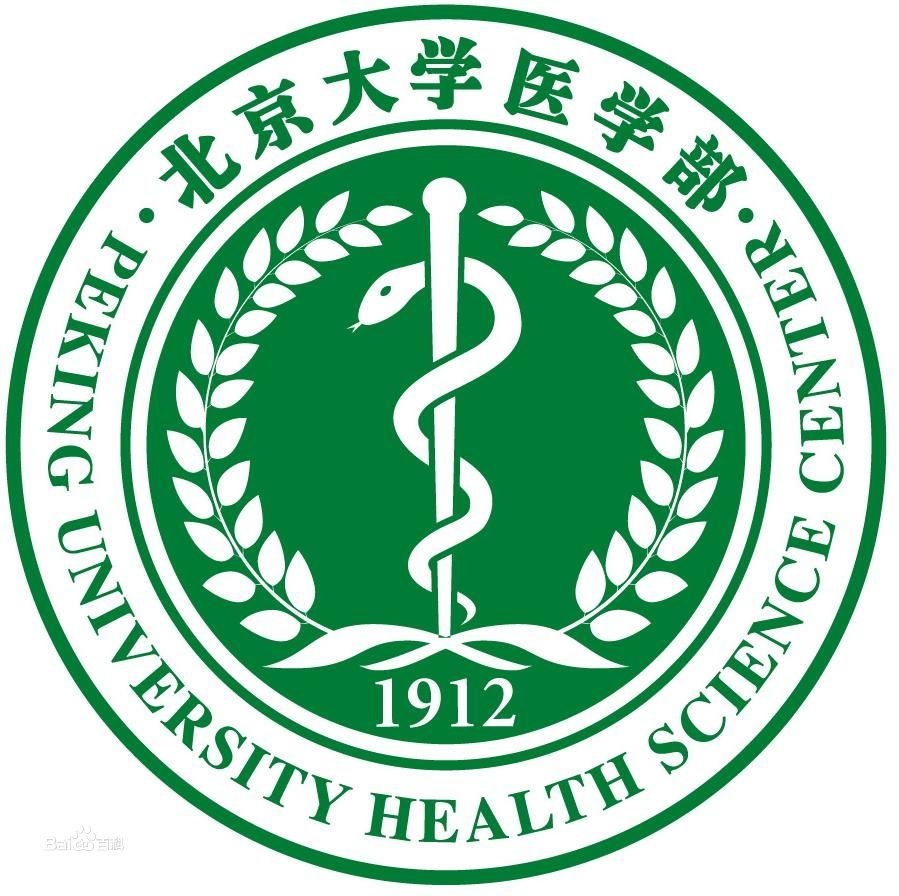

| 北京大学医学部 |  | ←点击查看更多 |
临床医学是研究疾病的病因、诊断、治疗和预后，提高临床治疗水平，促进人体健康的科学;医预阶段主要进行数理、生化等基础知识的积累，为未来专业课程的学习做准备。
临床即“亲临病床”之意，它根据病人的临床表现，从整体出发结合研究疾病的病因、发病机理和病理过程，进而确定诊断，通过预防和治疗以最大程度上减弱疾病、减轻病人痛苦、恢复病人健康、保护劳动力。临床医学是直接面对疾病、病人，对病人直接实施治疗的科学。
16世纪文艺复兴时期，医学陈规被打破，产生了人体解剖学。17世纪，生理学建立。18世纪，病理解剖学建立。19世纪，细胞学、细菌学获得长足发展。基础医学和临床医学逐渐成为两个独立学科，数学、生物学、物理学、化学等方面的巨大进步为现代临床医学的产生奠定了坚实基础。
临床医学属于医学下属的一级学科，，以下又分为18个二级学科，分别是：